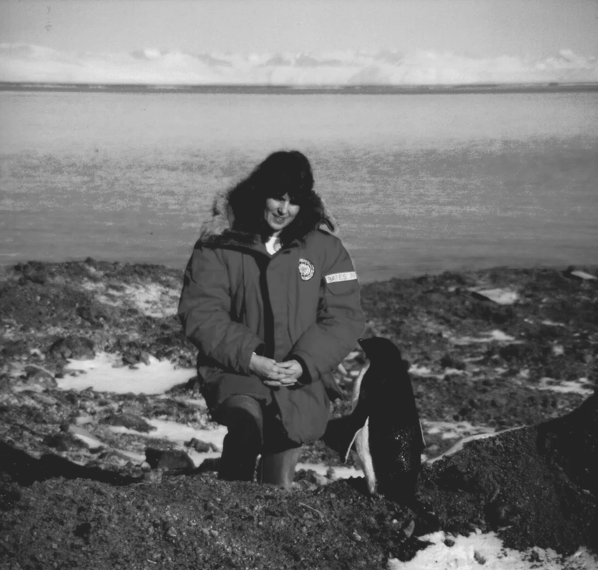
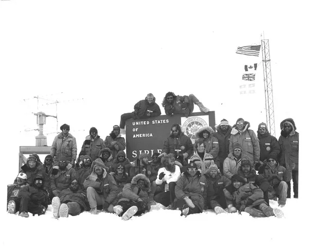
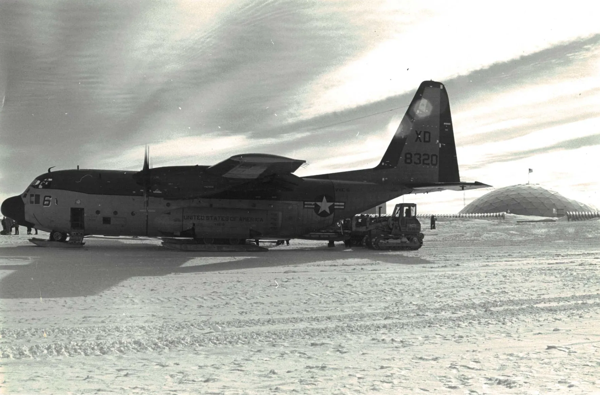
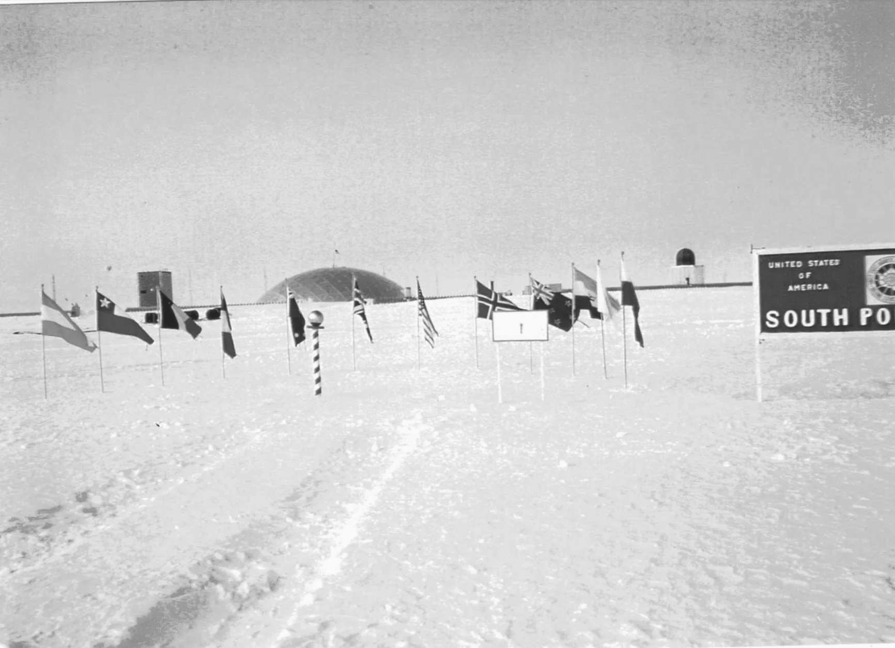
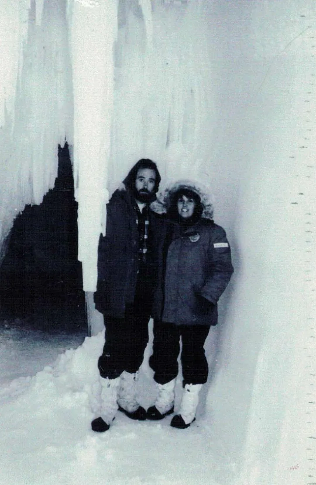
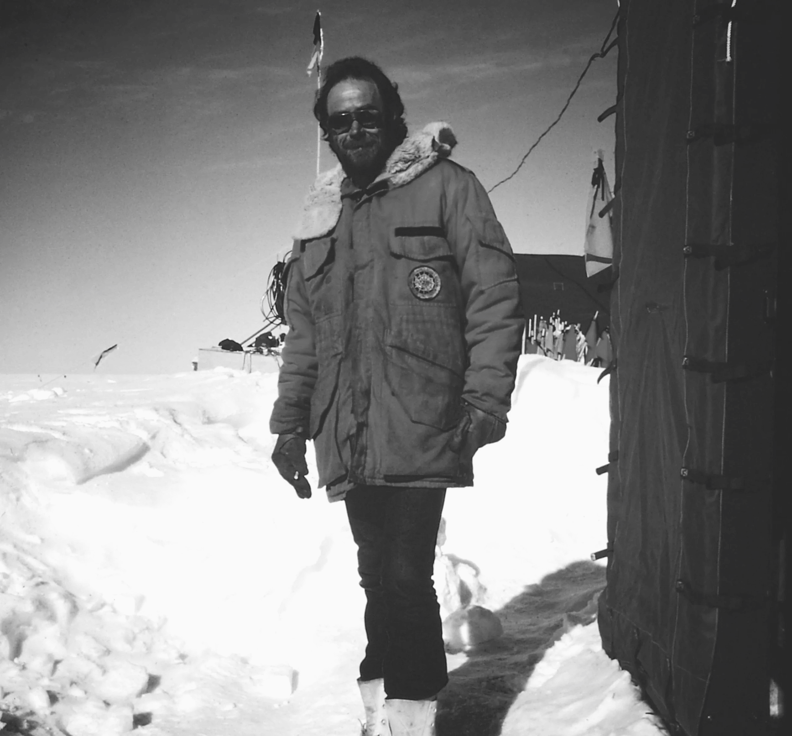
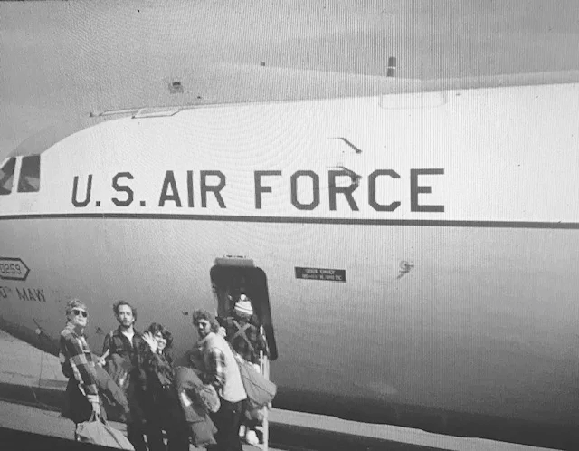
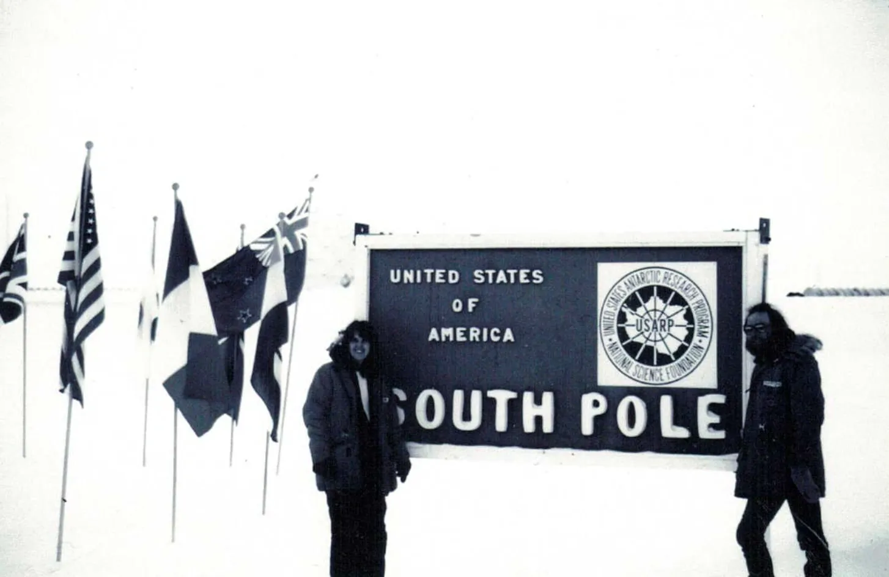

The timeline of Michael and Mary Lou Bates's Antarctic Journeys.
1972–1973
Michael 'Wintered-Over' for 13 months at McMurdo Station, Antarctica, after receiving a U.S. Navy assignment in OPERATION DEEP FREEZE as radioman.
1978–1979
Michael returned to Antarctica, contracting with Holmes and Narver, Inc. to 'Winter-Over' with seven men 35 feet below the surface of the ice for 13 months at Siple Station as Communication Coordinator.
Summer 1980
Two adventurous souls find each other.
1980–1981 & Summer 1982
Michael received a contract with ITT Antarctic Services Inc. as Communications Coordinator at Siple Station. Mary received a contract as summer Cook at the South Pole Station — her first season on the ice.
Summer 1982
Michael and Mary wed in a ceremony in Akaroa, New Zealand — a country that would become dear to them both.
1982–1983
Michael served as Communications Co-coordinator. Mary served as Siple Station Cook — their first full season together on the ice.
1983–1984
Michael received a contract as Siple Station Manager. Mary served as Communications Operator and Meteorological Observer.
1984–1985
Michael oversaw Beardmore South Camp to host the International Antarctic Treaty Conference. Mary served as cook for the Construction Camp set-up and Communications Operator for the conference.
1985–1986
Michael received a contract to oversee the closing of Siple Station — the end of an era on the ice.
1986–1987
Michael received a contract with the National Science Foundation as coordinator of the National Ozone Expedition.







